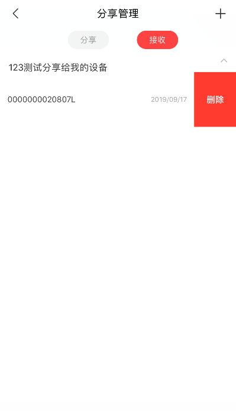
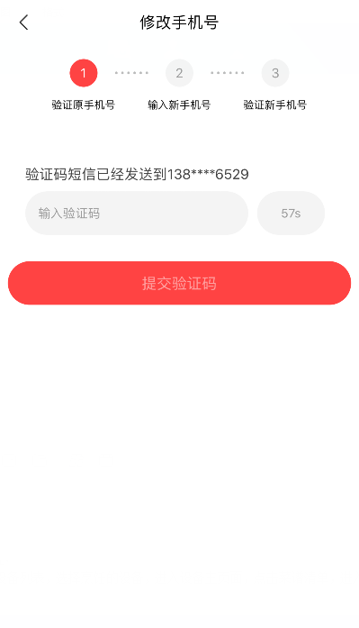

APP与有屏设备配对
注:有屏设备泛指CF7带彩色显示屏的设备
1. 请先给设备通电，并连续按两次编码器开启设备;
2. 等待设备端进入主界面后, 点击设备端主界面左上角"设置"按钮进入设置界面 ,然后点击无线网络,选择需要连接的网络并输入密码进行连接(无密码可不输入);
3. 打开手机 App 后，在设备首页点击右上方点击” ”添加设备，选择对应产品类型进入配网界面;
4. 打开设备屏端的设置界面,点击”手机与APP配对” 进入设备二维码界面
5. 使用手机APP继续扫描如上二维码(亦可手动输入二维码下方的12位MAC,输入完成后点击下一步)
6. 等待设备端显示下图,点击同意.
7. 设备端同意配对后,APP端即完成配对操作,设备添加成功;
APP与无屏设备配对
注:此处的无屏设备泛指数码屏以及不带屏幕的设备,如KAMCP102
第一步：添加设备
1. 请先给设备通电，并开启
2. 进入 App 后，在首页点击右上方“+”选择对应产品类型;
3. 扫描机器上贴附的的二维码(或手动输入序列号)；
4. 在设备端长按“转速”按键3秒后， Wi-Fi 指示灯开始闪烁，设备置于配网状态
第二步：输入Wi-Fi密码
选择设备可连接互联⽹的 Wi-Fi，输入 Wi-Fi 密码，点击“下一步”进入配网过程。现只支持2.4G的Wi-Fi进行配网，请检查该Wi-Fi是否是2.4G网络。
第三步：等待配网成功
等待配网结果,配网成功后,APP将显示如下界面,通常配网过程只需很短时间即可配网成功，若配网失败，请查看失败原因并重试。
如何将设备共享给好友？
方式一：我的->分享管理->创建分享
点击底部右下方“我的”标签，选择“分享管理”选项，进入分享管理界面，点击右上角“+” ，跳转至设备选择页面，选择完成后，点击“下一步”，生成分享的二维码，扫码即可完成分享。
方式二：设备主页->更多->设备共享
从设备列表选择一个设备进入主页面，点击右上角“…”（更多）按钮，选择“设备共享”，可以生成共享二维码，扫码即可完成共享。
如何将共享的设备删除？
点击底部右下方“我的”标签，选择“分享管理”选项，进入分享管理界面： a.点击“分享”，打开分享记录，选择分享的设备向左滑动，可删除分享的设备 b.点击“接收”，打开接收记录，选择接收的设备向左滑动，可删除接收的设备
如何修改密码？
点击底部右下方“我的”标签，进入系统设置，选择“修改密码”选项，输入旧密码、新密码、确认新密码，点击确定按钮即可完成修改。
如何绑定/解绑第三方账号？
1)绑定第三方账号
点击底部右下方“我的”标签，进入系统设置，选择绑定的第三方账号（微信/QQ/微博），开启绑定按钮跳转至对应第三方账号授权页面，授权登录成功即完成绑定
2)解绑第三方账号
点击底部右下方“我的”标签，进入系统设置，选择已绑定的第三方账号，关闭绑定按钮即解绑
如何更换手机号？
点击底部右下方“我的”标签，进入系统设置，选择“更换手机号”选项，进入更换手机号流程：验证原手机号 -> 输入新手机号->验证新手机号，验证成功即完成手机号更换。
如何烹饪？
1)普通菜谱烹饪
手机APP端打开设备列表，选择烹饪的设备，进入设备主页面，点击菜谱清单，进入菜谱烹饪流程： a. 选择菜谱点击进入菜谱详情 b. 点击开始制作跳转至等待烹饪界面 c. 设备屏端确认 d. 进入烹饪详细步骤 e. 完成
2)快捷菜烹饪
快捷菜烹饪为KAMCP102型号厨师机独有功能，手机APP端打开设备列表，选择烹饪的设备，进入设备主页面，点击快捷菜烹饪，进入菜谱烹饪流程： aa. 选择菜谱点击进入菜谱详情 b. 点击开始制作跳转至等待烹饪界面 c. 设备屏端确认 d. 进入烹饪制作页面，设备启动 e. 完成
3)自定义
手机APP端打开设备列表，选择烹饪的设备，进入设备主页面，点击自定义，进入自定义烹饪流程： a. 设置自定义参数 b. 点击开始制作跳转至等待烹饪界面 c. 设备屏端确认 d. 进入自定义制作页面，设备启动 e. 完成
4)和面（KAMCP301、501型号厨师机）
手机APP端打开设备列表，选择烹饪的设备，进入设备主页面，点击和面，进入和面流程： a. 设置和面时间 b. 点击开始制作跳转至等待烹饪界面 c. 设备屏端确认 d. 进入和面制作页面，设备启动 e. 完成
5)和面（KAMCP102型号厨师机）
手机APP端打开设备列表，选择烹饪的设备，进入设备主页面，点击快捷菜，选择揉面即和面功能
如何收藏/取消收藏菜谱？
1)收藏菜谱
手机APP端打开设备列表，选择烹饪的设备，进入设备主页面，点击菜谱清单，可查看所有菜谱，选择菜谱进入菜谱详情，点击收藏菜谱，也可以在烹饪过程中点击 收藏菜谱 ，收藏的菜谱在“我的收藏”可查看。
2)取消收藏菜谱
方式一：菜谱详情、烹饪过程中点击 取消收藏
方式二：打开“我的收藏”，选择取消收藏的菜谱，左滑点击取消
如何下载菜谱？
1)单个菜谱下载
手机APP端打开设备列表，选择烹饪的设备，进入设备主页面，点击菜谱清单，进入菜谱列表，选择下载菜谱向左滑动，可下载
2)多个菜谱下载
手机APP端打开设备列表，选择烹饪的设备，进入设备主页面，点击菜谱清单，进入菜谱列表，长按菜谱名称，出现多选框，可多选菜谱下载 ，KAMCP102、301型号厨师机下载最多可选5条。